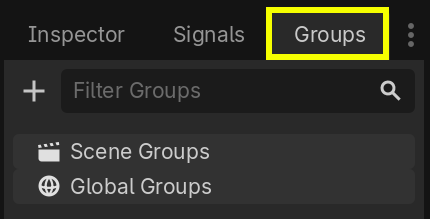

Groups
Groups in Godot work like tags in other software. You can add a node to as many groups as you want. Then, in code, you can use the SceneTree to:
Get a list of nodes in a group.
Call a method on all nodes in a group.
Send a notification to all nodes in a group.
This is a useful feature to organize large scenes and decouple code.
Managing groups
Groups are created by adding a node to a new group name, and likewise they are removed by removing all nodes from a given group.
There are two ways to add/remove nodes to groups:
During design, by using the Groups dock in the editor, or the Groups tab in the Globals dock in project settings.
During execution, by calling Node.add_to_group() or Node.remove_from_group().
Tip
While not strictly required, it's recommended to use the snake_case naming
convention for group names.
Using the Groups dock
You can create new groups using the Groups dock.

Select a node in the Scene dock then click the add button with the + symbol.

You should now see the Create New Group modal appear. Write the group name in the field.
You can optionally mark the option "Global", which will make the group visible project-wide, and able to be reused in any project scene. This will also allow you to give it a description.
When done, press Ok to create it.

You should see the new groups appear in the Groups dock under Scene Groups if the Global option was unmarked, or under Global Groups if that option was marked.
A selected Node from the Scene dock can be added into groups by marking the checkbox on the left side of the groups in the Groups dock. The node you had selected when creating a new group will be automatically checked.

All groups present in the project that were marked as Global, created from any scene, will be visible under Global Groups.
Any other group derived from nodes in the current scene will appear under Scene Groups.
Warning
The same underlying logic is used for both Global and Scene groups. Groups with the same name are considered one and the same. This feature is purely organizational.

You can manage Global Groups in the Groups tab of the Globals dock, inside Project Settings. There, you will be able to add new global groups, or change existing groups' names and descriptions.

Using code
You can also manage groups from scripts. The following code adds the node to
which you attach the script to the guards group as soon as it enters the
scene tree.
func _ready():
add_to_group("guards")
public override void _Ready()
{
base._Ready();
AddToGroup("guards");
}
Imagine you're creating an infiltration game. When an enemy spots the player, you want all guards and robots to be on alert.
In the fictional example below, we use SceneTree.call_group() to alert all
enemies that the player was spotted.
func _on_player_spotted():
get_tree().call_group("guards", "enter_alert_mode")
public void _OnPlayerDiscovered()
{
GetTree().CallGroup("guards", "enter_alert_mode");
}
The above code calls the function enter_alert_mode on every member of the
group guards.
To get the full list of nodes in the guards group as an array, you can call
SceneTree.get_nodes_in_group():
var guards = get_tree().get_nodes_in_group("guards")
var guards = GetTree().GetNodesInGroup("guards");
The SceneTree class provides many more useful methods to interact with scenes, their node hierarchy, and groups. It allows you to switch scenes easily or reload them, quit the game or pause and unpause it. It also provides useful signals.